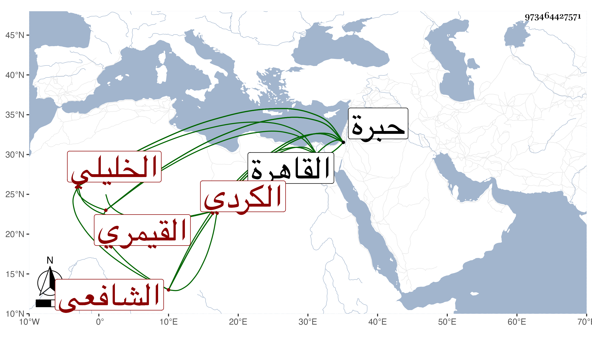

0902Sakhawi.DawLamic.ITO20230111-ara1.EIS1600.973464427571
Biography ID: 973464427571
736
خليل بن أحمد بن عيسى بن الصلاح خليل بن عيسى بن محمد صلاح الدين القيمري الكردي الأصل الخليلي الشافعي والد محمد الآتي . ولد في ذي القعدة سنة ثمان وثمانين وسبعمائة بالخليل ونشأ بها فقرأ القرآن عند إسماعيل بن إبراهيم بن مروان وارتحل إلى القاهرة فجوده على الزراتيتي والنور علي بن حسب البوصيري وغيرهما ، وسمع على الشرف بن الكويك جزء ابن عرفة والبطاقة وأشياء وببلده المسلسل على شيخنا بالاجازة الشمس أبي عبد الله التدمري وفقيهه ابن مروان المذكور والشهاب أحمد بن حسين النصيبي وإبراهيم بن حجي الحسيني عظيمات والشحنة الأحنف قالوا أنابه الميدومي ، وكذا سمع على ابن الجزري وغيره وتصدى للقراءات بمسجد الخليل وقرأ على العامة فانتفع به في ذلك وحج لقيته بالخليل فقرأت عليه جزءي ابن عرفة والبطاقة ، وكان خيرا دينا عارفا بالقراءات . مات في سنة سبع وستين ، وجد أبيه ممن أجاز لشيخنا أبي هريرة القبابي .
